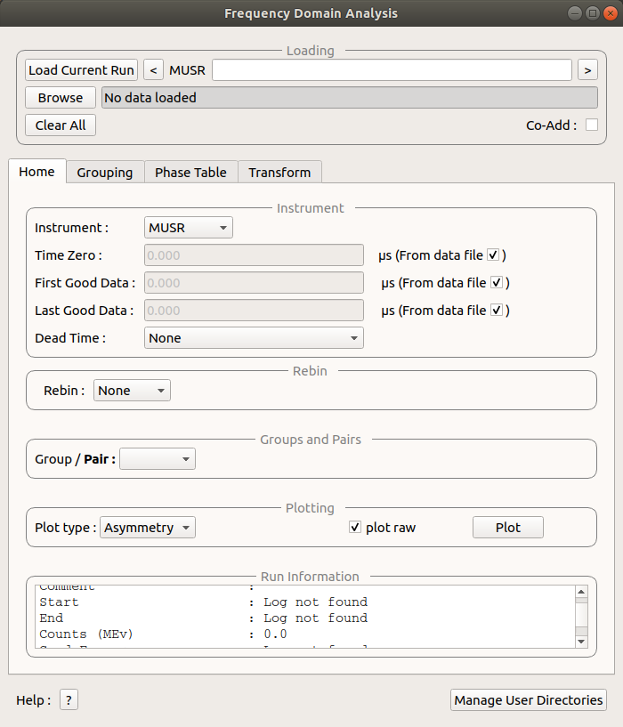
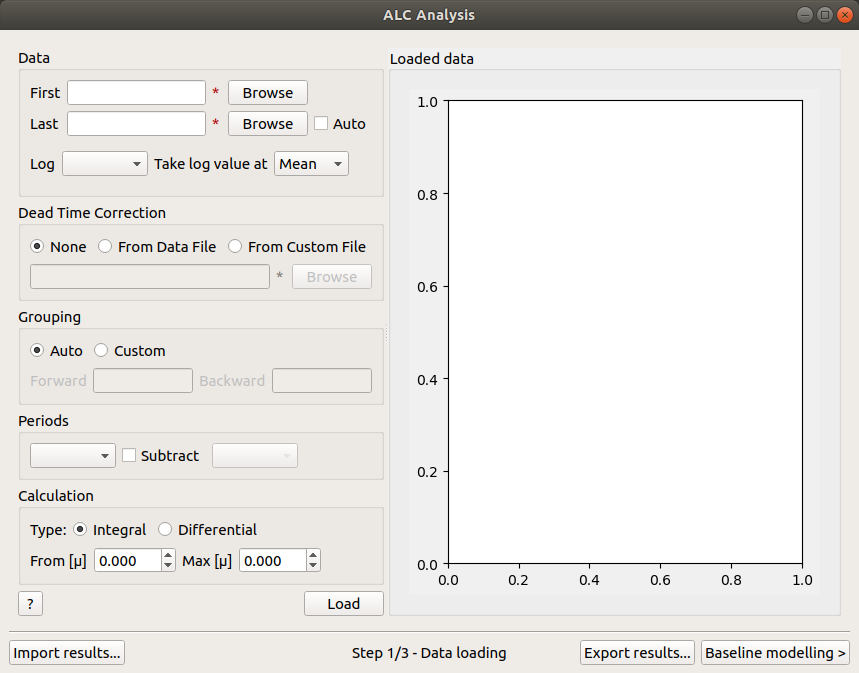
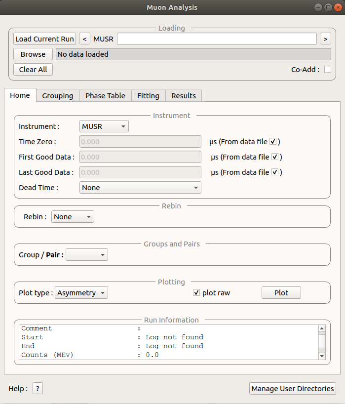
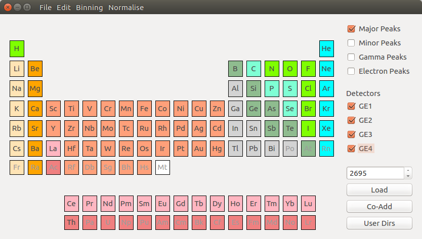

\(\renewcommand\AA{\unicode{x212B}}\)
MuSR Changes¶
   {kind=link}
{kind=link}
{kind=link}
{kind=link}
New¶
Frequency Domain Analysis GUI added to Workbench.
Muon ALC GUI added to Workbench.
Added phase tab for calculating phase tables and PhaseQuad workspaces to Frequency Domain Analysis GUI.
Muon Analysis v2 added to MantidPlot and Workbench.
Elemental analysis interface added to Workbench.
Improvements¶
Phase table and phase Quad options from frequency domain transform tab moved to phase calculations tab.
The new interface is designed to better handle multiple runs while being more intuitive to use.
Significant increase in the number of tests for the code, which means greater stability of the interface, a vast reduction in the number of hard crashes and a much more pleasant and productive experience overall.
Added the possibility of choosing the order of a sequential fit.
When plotting peaks in the Elemental Analysis interface, lines for different elements will appear in different colours.
The Frequency Domain Analysis GUI now allows users to load and group detectors and plotting different types of spectra.
Frequency spectra can also be created and a fit made to generate a result table.
The tabs for each of the interfaces can be detached and turned into separate windows, making for greater customizability of the interface.
When fitting data in the Muon Analysis v2 interface it is possible to customize the name assigned to the function and workspace group.
The resulting workspaces (in the Result tab of Muon Analysis) will appear sorted by fitting function.
In the Result tab of Muon Analysis it is possible to search for specific log values, exclude specific value or display only selected ones.
In the Select data to fit window it is possible to search the spectra of interest and select the ones to be fitted.
The order of a sequential fit can then be chosen by dragging the spectral lines and ordering them
Removed¶
Removed the algorithm GetNegMuMuonicXRDDialog as the new Elemental Analysis interface provides the same, improved, functionality.
Bug Fixes¶
An issue which prevented the fit button from appearing on plots with errorbars was resolved. This means that the fit button now appears on plots created by Muon Analysis when it did not previously. Please note that fits done in this way will not be accessible in the Muon Interface, you should use the fitting in the Muon interface Fitting Tab for that.
Muon Analysis (original) no longer crashes when TF Asymmetry mode is activated.
Frequency Domain Analysis old no longer throws an error when calculating PhaseQuads.
Muon Analysis (original) can now produce results tables when columns contain both ranges and single values.
Issue where imaginary box was reappearing for FFT transforms after being unselected fixed.
Issue where FFT names include an imaginary part when there was no imaginary data used.
Elemental Analysis no longer crashes when an ill formatted data file is loaded.
Changed the y-axis label in Elemental Analysis to Counts.
Known Issues¶
Plotting can be very slow to update if large numbers of workspaces are plotted. This can lead to unresponsive behaviour when large numbers of workspaces are fitted with sequential fits. As a temporary solution closing the plot window before performing large sequential fits can avoid this slowdown.